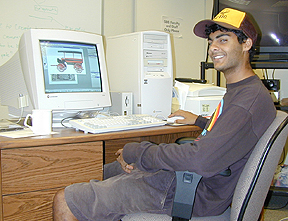

Digital Imaging and Editing
 The
Digital Image Editor: Cenan
Pirani is a student in the Communications, Science and Technology program
at CSU Monterey Bay, and has worked on a variety of funded projects within
the Social and Behavioral Sciences Center at our campus. Cenan brought
his skills as a Photoshop technician to the creation of hundreds of images
that were systematically edited and rendered as icons with transparent
backgrounds used in both the CD-ROM project and on this website.
See the "Background" section of this portion of the website for a view
of some of Cenan's handiwork.
Text and Photographs Copyright
Ruben G. Mendoza, 2000
Main